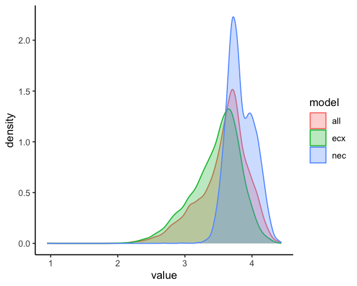
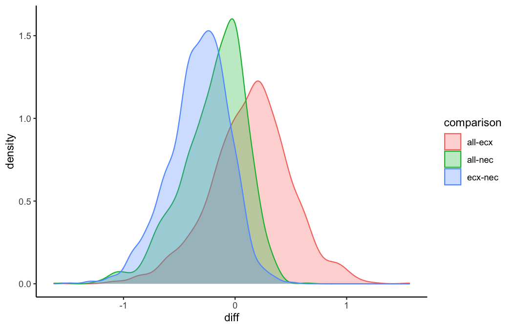
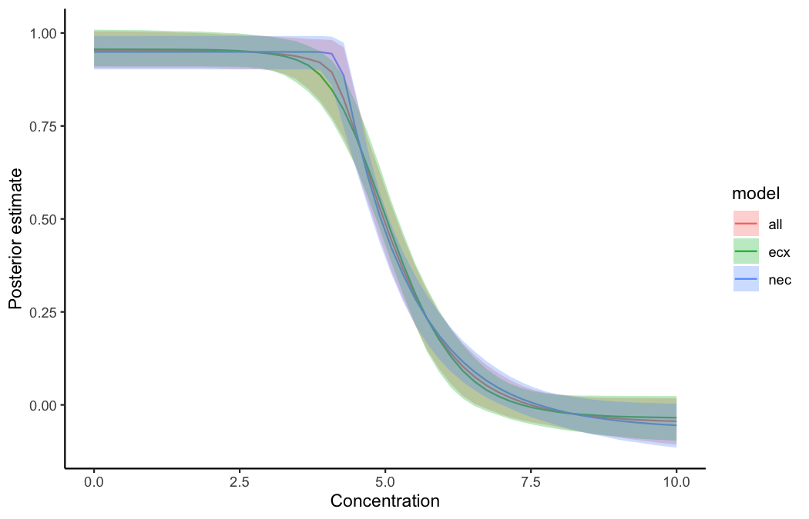
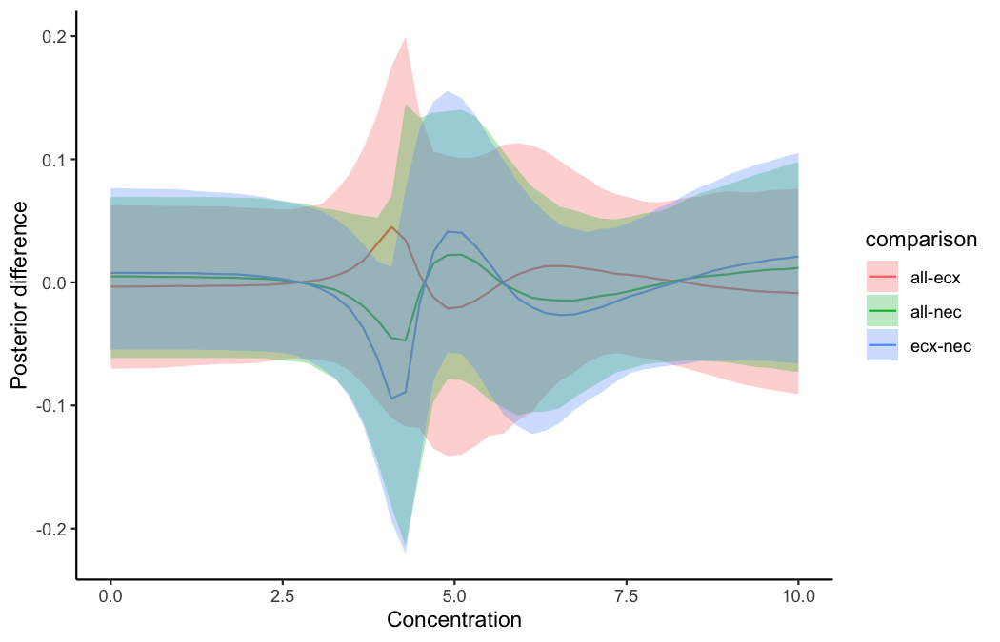
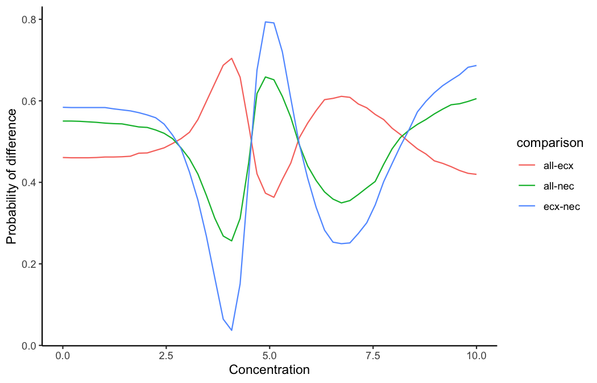

With bayesnec we have included a function that allows bootstrapped comparisons of posterior predictions. The main focus here is to showcase how the user can fit several different bnec model fits and can compare differences in the posterior predictions across these fits for individual endpoint estimates (e.g. nec, nsec or ecx) or across a range of predictor (x) values. Below we demonstrate usage of compare_posterior for objects of class bayesnecfit and bayesmanecfit. In this example we compare different types of models and model sets using a single dataset. However, the intent of this function is to allow comparison across different datasets that might represent, for example, different levels of a fixed factor covariate. At this time bnec does not allow inclusion of an interaction with a fixed factor. Including an interaction term within each of the non-linear models implemented in bayesnec is relatively straightforward, and may be introduced in future releases. However, in many cases the functional form of the response may change with different levels of a given factor. The substantial complexity of defining all possible non-linear model combinations at each factor level means it unlikely this could be feasibly implemented in bayesnec in the short term. In the meantime the greatest flexibility in the functional form of individual model fits can be readily obtained using models fitted independently to data within each factor level.
To run this vignette, we will also need some additional packages
library(brms)
library(bayesnec)
data(nec_data)
# Fit a set of models
set.seed(30)
x <- seq(0, 10, length = 12)
y <- bayesnec:::pred_ecx4param(x=x, b_bot=0, b_top=1, b_beta=0.5, b_ec50 = 5)
dat <- data.frame(y_vec = rnorm(15*12, y, 0.2), x_vec = rep(x, 15))
exmp <- bnec(data = dat, x_var = "x_vec", y_var = "y_vec", model = "decline", iter=2e3, refresh = 0)
class(exmp)
#> [1] "bayesmanecfit"This call fits all models that are suitable for modelling gaussian response data, excluding all of the hormesis models, which we are not considering here. We’ve reduce the iter back to the brms default to make the example lighter, but we do not recommend this in practive. Now we have our example fit, we can use this to make different model sets, purely for the purposes of illustrating compare_posterior in bayesnec and highlighting the rich information that is contained in the Bayesian posterior samples.
We can pull out the nec models and the ecx models separately, to create two alternative model fits of this data that we can compare to each other, as well as the original all model fit.
Now we have three different averaged model fits, all of class bayemanec in this case (because they all contain multiple fits). We can compare their posterior estimates of the ex10 values using compare_posterior.
post_comp <- compare_posterior(list("all" = exmp, "ecx" = exmp_ecx,
"nec" = exmp_nec),
comparison = "ecx", ecx_val = 10)
names(post_comp)
#> [1] "posterior_list" "posterior_data" "diff_list" "diff_data" "prob_diff"The compare_posterior function outputs several elements in a named list. This includes the posterior_data for each model in the comparison as a data.frame which we can use to plot a geom_density plot of the posterior estimates, so they can be compared visually.
ggplot(data = post_comp$posterior_data, mapping = aes(x = value)) +
geom_density(mapping = aes(group = model, colour = model, fill = model),
alpha = 0.3) +
theme_classic()
From this you can see that the ec10 estimates are very similar for the ecx and all model sets. This is because the ecx model types dominate the model weights in this all fit, see wi in exmp$mod_stats. The ec10 estimate is slightly lower (more conservative) for the ecx based models.
The data.frame “diff_data” can be used to make a similar plot, but specifically for the differences among models.
ggplot(data = post_comp$diff_data, mapping = aes(x = diff)) +
geom_density(mapping = aes(group = comparison, colour = comparison,
fill = comparison), alpha = 0.3) +
theme_classic() 
This shows the differences among the three estimates. There is no difference in the ecx and all estimates (the probability density overlaps zero - red shaded curve). This is because for this example the simulated data are from a smooth ecx type curve and thus those models have high weight. The nec based ec10 estimates are greater than the ecx estimates in this case.
We can formally test the probability that the endpoint estimate for one model set is greater than the other using posterior differencing. This is contained in the compare posterior output as “prob_diff”. Here you can see there is 54% chance that all is greater than ecx. There is only a 2% chance that ecx is greater than nec, and a 1-that chance that the nec is greater than ecx (ie 98%).
post_comp$prob_diff
#> comparison prob
#> 1 all-ecx 0.54067584
#> 2 all-nec 0.07259074
#> 3 ecx-nec 0.01877347The user can also compare posterior fitted values across the full range of x values, using comparison = "fitted".
post_comp_fitted <- compare_posterior(list("all" = exmp, "ecx" = exmp_ecx,
"nec" = exmp_nec),
comparison = "fitted")In the case of comparison = "fitted" most of the elements returned by compare_posterior are class data.frame, with summary values for the posteriors, difference values and probabilities returned for each value of x, for each model or model comparison.
head(post_comp_fitted$posterior_data)
#> model x Estimate Q2.5 Q97.5
#> 1 all 0.09090909 0.9671604 0.9108767 1.029407
#> 2 all 0.29313544 0.9668554 0.9108760 1.028279
#> 3 all 0.49536178 0.9666405 0.9108757 1.026873
#> 4 all 0.69758813 0.9664331 0.9108753 1.025601
#> 5 all 0.89981447 0.9659434 0.9108747 1.025491
#> 6 all 1.10204082 0.9648110 0.9108735 1.024101
head(post_comp_fitted$diff_data)
#> comparison diff.Estimate diff.Q2.5 diff.Q97.5 x
#> 1 all-ecx -0.003084103 -0.08675688 0.08666971 0.09090909
#> 2 all-ecx -0.003042837 -0.08540435 0.08637425 0.29313544
#> 3 all-ecx -0.003262809 -0.08427360 0.08536299 0.49536178
#> 4 all-ecx -0.003378638 -0.08363532 0.08525589 0.69758813
#> 5 all-ecx -0.003363212 -0.08270514 0.08223681 0.89981447
#> 6 all-ecx -0.003178295 -0.08169587 0.08159099 1.10204082Using the collated posterior_data we can plot the predicted curves with confidence bounds for each of the input models. This shows clearly that the ecx model set begins to decline earlier than the nec set, which is flat prior to the nec step point, and then declines more rapidly.
ggplot(data = post_comp_fitted$posterior_data) +
geom_line(mapping = aes(x = x, y = Estimate, color = model), size = 0.5) +
geom_ribbon(mapping = aes(x = x, ymin = Q2.5, ymax = Q97.5, fill = model),
alpha = 0.3)+
labs(x = "Concentration", y = "Posterior estimate") +
theme_classic()
We can plot the differences between pairs of models in the list by plotting “diff.Estimate” from “diff_data” and using colours for the different comparisons. This plot highlights where the differences among these model sets are the greatest and explains the differences we see above in the ec10 endpoint estimates. The ecx and all model sets are relatively similar across the entire range of concentrations (x) (red band overlaps zero). The green band is the difference between nec and all (specifically all-nec) and the blue band is the difference between nec and ecx (specifically ecx-nec). You can see from the green and blue bands that the nec set has slightly lower estimates than all and ecx at low to moderate x values; the nec based curve then crosses the other two, predicting higher values of the response at around a concentration of 4-5; then drops rapidly, producing lower predictions than the other curves at around 5.
ggplot(data = post_comp_fitted$diff_data) +
geom_line(mapping = aes(x = x, y = diff.Estimate, color = comparison),
size = 0.5) +
geom_ribbon(mapping = aes(x = x, ymin = diff.Q2.5, ymax = diff.Q97.5,
fill = comparison), alpha = 0.3) +
labs(x = "Concentration", y = "Posterior difference")
And finally we can plot the probability that one model is greater than the other by plotting “prob” from “diff_data”. The pattern of this plot is identical to the plot of differences, but the y axis now shows the probability of these differences. The red line hovers around 0.5 clearly indicating the lack of significant difference in the ecx and all model sets at any point of the x-curve. The green and blue curves pass through 0.5 at several points, meaning there are parts of the curve where there is no significant difference between the nec and the ecx or all model set predictions. The greatest probability of difference among these curves is between values of ~3 and ~4 of x, where the probability of difference trends towards low values (ecx is higher than nec), and at around 5, where the probability difference is very high (nec is higher than ecx). These are the two points where the ecx set deviates most from the nec set.
ggplot(data = post_comp_fitted$prob_diff) +
geom_line(mapping = aes(x = x, y = prob, color = comparison), size = 0.5) +
labs(x = "Concentration", y = "Probability of difference")
Here we use the difference in the ecx and nec models sets purely to showcase the functionality of ‘compare_posterior’ and highlight some of the strengths of using a bayesian approach. These differences are expected in this case, because the simulated data we used are from a smooth exc function. The nec models are fitting a break-point model that has a single mean value up to the nec, followed by a relatively sharp decline. When fitted to these smooth curves the nec models don’t really fit the data well and produce inflated (less conservative) estimates of the ec10 value. Fortunately, the model averaging approach solves this issue by yielding a very low weight to the nec based models, and the all model set is indistinguishable from the ecx set, which contains the underlying true generating model in this case. As such, this is not really an intersting example - other than illustrating the behaviour of nec model types in this setting.
The compare_posterior function was actually developed with the intention of comparing model sets based on different data to assess statistically the difference in either the endpoint estimtates, or across the entire fitted curve, amongst factors of interest. Examples would include assessing for changes in toxicity across different WET tests through time, or comparing different levels of a factor treatment variable (such as climate change scenarios), to look at how these interact with concentration to impact toxicity.